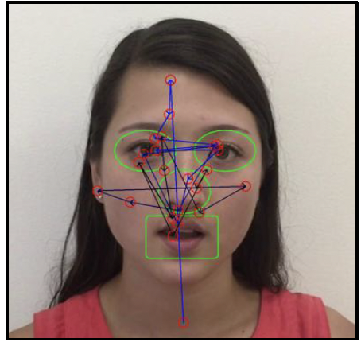
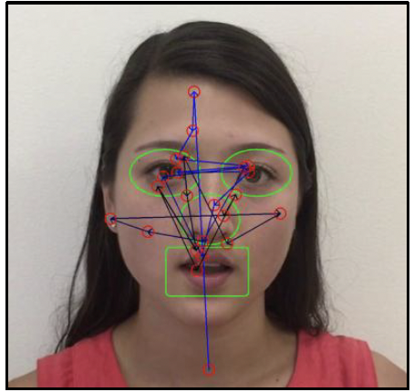
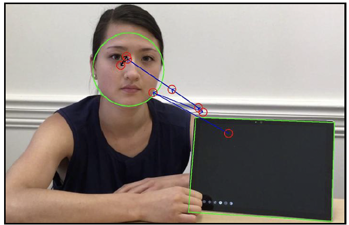
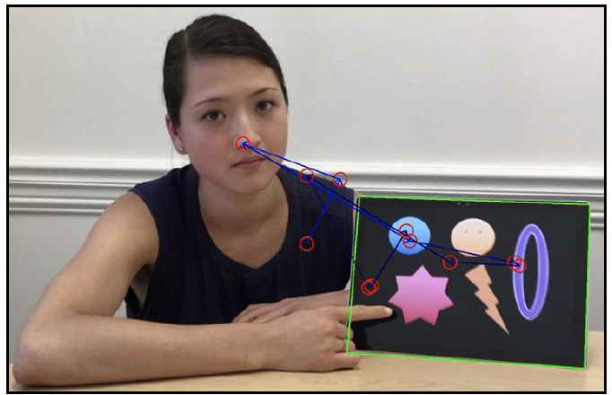

자폐스펙트럼장애 진단
결과 보고서
검사기관명
ㅇㅇㅇㅇ병원
주소
서울특별시 강남구 xx로 123
연락처
02-123-3455
담당의사
김의사
1. 환자 정보
| 이름 | 홍길동 | ID | 1234-56 | 성별 | 남 | 나이(개월) | 만 1세 (15개월) |
|---|---|---|---|---|---|---|---|
| 평가일 | 2025년 1월 29일 | 평가도구 | EATS v1.0 | ||||
2. 진단 결과 요약
그래프 영역
*AVC(AOI Vacancy count percentage) 수치가 높게 나올수록 ASD일 가능성이 높다는 의미
3. 진단 내역
| Video 1 | Video 2 | ||
|---|---|---|---|
| AOI (관심영역) |
 눈 |
 입 |
 주의 |
| 성능* | 민감도 80%, 특이도 100% | 민감도 80%, 특이도 92% | |
| 측정 내용 | - 마음이론 (Theory of Mind) - 사회성 - 초기 언어발달 |
- 공동주의 (Joint Attention) - 사회적 의사소통 능력 |
|
*PCT/US 2023 / 08 2298
V1 상세 결과
Face Speaking
검사기관명
ㅇㅇㅇㅇ병원
주소
서울특별시 강남구 xx로 123
연락처
02-123-3455
담당의사
김의사
1. AOI* 세부지표
| V1 | 1 | 2 | 3 | |
|---|---|---|---|---|
| Fixation | Total count | 623 | 623 | 623 |
| % | 89.8% | 89.8% | 89.8% | |
| Saccade | Total count | 71 | 71 | 71 |
| % | 4.7% | 4.7% | 4.7% | |
| Switching | In to In | 3 | 3 | 3 |
| In to Out | 1 | 1 | 1 | |
| Out to Out | 2 | 2 | 2 | |
| Out to In | 1 | 1 | 1 | |
| Vacancy | AVC% | 4.7% | 4.7% | 4.7% |
| Risk Level | Low | Low | Low | |
*AOI (Area of Interest, 관심자극)
2. V1 자극 분석
| V 1-1 | V 1-2 | V 1-3 |
|---|---|---|
 |
 |  |
3. V1 Phenotype 결과
평균 AOI 반응성이 89.8%, SACCADE 4.7%, AVC 4.7%로
전반적인 ASD Risk Level은 낮은 것으로 보임.
V2 상세 결과
Tablet
검사기관명
ㅇㅇㅇㅇ병원
주소
서울특별시 강남구 xx로 123
연락처
02-123-3455
담당의사
김의사
1. AOI* 세부지표
| V2 | 1 | 2 | |||
|---|---|---|---|---|---|
| Fixation | Total count | 623 | 623 | 623 | 623 |
| % | 89.8% | 89.8% | 89.8% | 89.8% | |
| Saccade | Total count | 71 | 71 | 71 | 71 |
| % | 4.7% | 4.7% | 4.7% | 4.7% | |
| Switching | In to In | 3 | 3 | 3 | 3 |
| In to Out | 1 | 1 | 1 | 1 | |
| Out to Out | 2 | 2 | 2 | 2 | |
| Out to In | 1 | 1 | 1 | 1 | |
| Vacancy | AVC% | 4.7% | 4.7% | 4.7% | 4.7% |
| Risk Level | Low | Low | Low | Low | |
*AOI (Area of Interest, 관심자극)
2. V2 자극 분석
| V 2-1 | V 2-2 |
|---|---|
|  |  |
3. V2 Phenotype 결과
평균 AOI 반응성이 89.8%, SACCADE 4.7%, AVC 4.7%로
전반적인 ASD Risk Level은 낮은 것으로 보임.